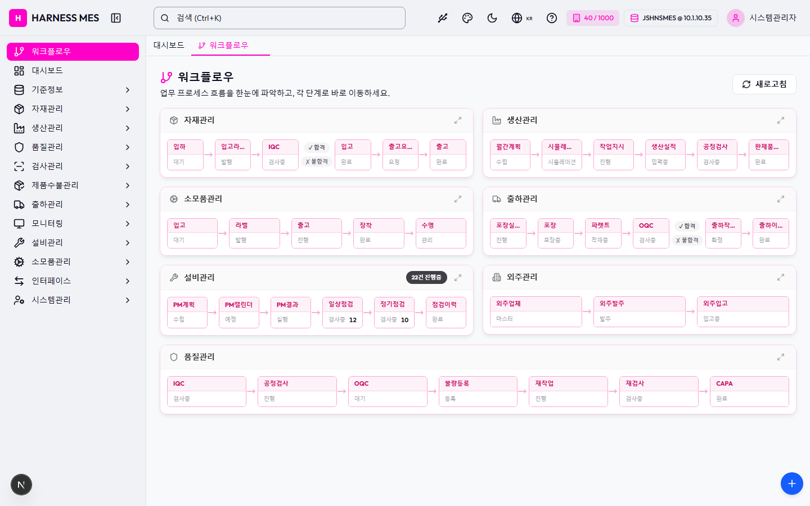

Route: /workflow
Status: FAIL / HTTP 200
| 기능/버튼 | 처리 방식 | 상태 | 비고 |
|---|---|---|---|
| 화면 로드 | GET /workflow | 실행 | HTTP 200 |
| 초기 API 호출 | 브라우저 네트워크 수집 | 실행 | 10건 |
| 🇰🇷 | 화면 버튼 목록화 | 목록화 | 후속 메뉴별 세부 시나리오 실행 대상 |
| 시스템관리자 | 화면 버튼 목록화 | 목록화 | 후속 메뉴별 세부 시나리오 실행 대상 |
| 워크플로우 | 화면 버튼 목록화 | 목록화 | 후속 메뉴별 세부 시나리오 실행 대상 |
| 대시보드 | 화면 버튼 목록화 | 목록화 | 후속 메뉴별 세부 시나리오 실행 대상 |
| 기준정보 | 화면 버튼 목록화 | 목록화 | 후속 메뉴별 세부 시나리오 실행 대상 |
| 자재관리 | 화면 버튼 목록화 | 목록화 | 후속 메뉴별 세부 시나리오 실행 대상 |
| 생산관리 | 화면 버튼 목록화 | 목록화 | 후속 메뉴별 세부 시나리오 실행 대상 |
| 품질관리 | 화면 버튼 목록화 | 목록화 | 후속 메뉴별 세부 시나리오 실행 대상 |
| 검사관리 | 화면 버튼 목록화 | 목록화 | 후속 메뉴별 세부 시나리오 실행 대상 |
| 제품수불관리 | 화면 버튼 목록화 | 목록화 | 후속 메뉴별 세부 시나리오 실행 대상 |
| 출하관리 | 화면 버튼 목록화 | 목록화 | 후속 메뉴별 세부 시나리오 실행 대상 |
| 모니터링 | 화면 버튼 목록화 | 목록화 | 후속 메뉴별 세부 시나리오 실행 대상 |
| 설비관리 | 화면 버튼 목록화 | 목록화 | 후속 메뉴별 세부 시나리오 실행 대상 |
| 소모품관리 | 화면 버튼 목록화 | 목록화 | 후속 메뉴별 세부 시나리오 실행 대상 |
| 인터페이스 | 화면 버튼 목록화 | 목록화 | 후속 메뉴별 세부 시나리오 실행 대상 |
| 시스템관리 | 화면 버튼 목록화 | 목록화 | 후속 메뉴별 세부 시나리오 실행 대상 |
| 새로고침 | 화면 버튼 목록화 | 목록화 | 후속 메뉴별 세부 시나리오 실행 대상 |
| 입하 대기 | 화면 버튼 목록화 | 목록화 | 후속 메뉴별 세부 시나리오 실행 대상 |
| 입고라벨 발행 | 화면 버튼 목록화 | 목록화 | 후속 메뉴별 세부 시나리오 실행 대상 |
| IQC 검사중 | 화면 버튼 목록화 | 목록화 | 후속 메뉴별 세부 시나리오 실행 대상 |
| 입고 완료 | 화면 버튼 목록화 | 목록화 | 후속 메뉴별 세부 시나리오 실행 대상 |
| 출고요청 요청 | 화면 버튼 목록화 | 목록화 | 후속 메뉴별 세부 시나리오 실행 대상 |
| 출고 완료 | 화면 버튼 목록화 | 목록화 | 후속 메뉴별 세부 시나리오 실행 대상 |
| 월간계획 수립 | 화면 버튼 목록화 | 목록화 | 후속 메뉴별 세부 시나리오 실행 대상 |
| 시뮬레이션 시뮬레이션 | 화면 버튼 목록화 | 목록화 | 후속 메뉴별 세부 시나리오 실행 대상 |
| 작업지시 진행 | 화면 버튼 목록화 | 목록화 | 후속 메뉴별 세부 시나리오 실행 대상 |
| 생산실적 입력중 | 화면 버튼 목록화 | 목록화 | 후속 메뉴별 세부 시나리오 실행 대상 |
| 공정검사 검사중 | 화면 버튼 목록화 | 목록화 | 후속 메뉴별 세부 시나리오 실행 대상 |
| 완제품입고 완료 | 화면 버튼 목록화 | 목록화 | 후속 메뉴별 세부 시나리오 실행 대상 |
| 입고 대기 | 화면 버튼 목록화 | 목록화 | 후속 메뉴별 세부 시나리오 실행 대상 |
| 라벨 발행 | 화면 버튼 목록화 | 목록화 | 후속 메뉴별 세부 시나리오 실행 대상 |
| 출고 진행 | 화면 버튼 목록화 | 목록화 | 후속 메뉴별 세부 시나리오 실행 대상 |
| 장착 완료 | 화면 버튼 목록화 | 목록화 | 후속 메뉴별 세부 시나리오 실행 대상 |
| 수명 관리 | 화면 버튼 목록화 | 목록화 | 후속 메뉴별 세부 시나리오 실행 대상 |
| 포장실적 진행 | 화면 버튼 목록화 | 목록화 | 후속 메뉴별 세부 시나리오 실행 대상 |
| 포장 포장중 | 화면 버튼 목록화 | 목록화 | 후속 메뉴별 세부 시나리오 실행 대상 |
| 파렛트 적재중 | 화면 버튼 목록화 | 목록화 | 후속 메뉴별 세부 시나리오 실행 대상 |
| OQC 검사중 | 화면 버튼 목록화 | 목록화 | 후속 메뉴별 세부 시나리오 실행 대상 |
| 출하작업 확정 | 화면 버튼 목록화 | 목록화 | 후속 메뉴별 세부 시나리오 실행 대상 |
| 출하이력 완료 | 화면 버튼 목록화 | 목록화 | 후속 메뉴별 세부 시나리오 실행 대상 |
| PM계획 수립 | 화면 버튼 목록화 | 목록화 | 후속 메뉴별 세부 시나리오 실행 대상 |
| PM캘린더 예정 | 화면 버튼 목록화 | 목록화 | 후속 메뉴별 세부 시나리오 실행 대상 |
| PM결과 실행 | 화면 버튼 목록화 | 목록화 | 후속 메뉴별 세부 시나리오 실행 대상 |
| 일상점검 검사중 12 | 화면 버튼 목록화 | 목록화 | 후속 메뉴별 세부 시나리오 실행 대상 |
| 정기점검 검사중 10 | 화면 버튼 목록화 | 목록화 | 후속 메뉴별 세부 시나리오 실행 대상 |
| 점검이력 완료 | 화면 버튼 목록화 | 목록화 | 후속 메뉴별 세부 시나리오 실행 대상 |
| 외주업체 마스터 | 화면 버튼 목록화 | 목록화 | 후속 메뉴별 세부 시나리오 실행 대상 |
| 외주발주 발주 | 화면 버튼 목록화 | 목록화 | 후속 메뉴별 세부 시나리오 실행 대상 |
| 외주입고 입고중 | 화면 버튼 목록화 | 목록화 | 후속 메뉴별 세부 시나리오 실행 대상 |
| 공정검사 진행 | 화면 버튼 목록화 | 목록화 | 후속 메뉴별 세부 시나리오 실행 대상 |
| OQC 대기 | 화면 버튼 목록화 | 목록화 | 후속 메뉴별 세부 시나리오 실행 대상 |
| 불량등록 등록 | 화면 버튼 목록화 | 목록화 | 후속 메뉴별 세부 시나리오 실행 대상 |
| 재작업 진행 | 화면 버튼 목록화 | 목록화 | 후속 메뉴별 세부 시나리오 실행 대상 |
| 재검사 검사중 | 화면 버튼 목록화 | 목록화 | 후속 메뉴별 세부 시나리오 실행 대상 |
| CAPA 완료 | 화면 버튼 목록화 | 목록화 | 후속 메뉴별 세부 시나리오 실행 대상 |
| 전체화면 보기 | 화면 버튼 목록화 | 목록화 | 후속 메뉴별 세부 시나리오 실행 대상 |
| AI 채팅 | 화면 버튼 목록화 | 목록화 | 후속 메뉴별 세부 시나리오 실행 대상 |
| 개선요청 등록 | 화면 버튼 목록화 | 목록화 | 후속 메뉴별 세부 시나리오 실행 대상 |
| 입력 필드 | DOM 수집 | 목록화 | 1개 |
| Method | URL | Status | OK |
|---|---|---|---|
| GET | /api/health | 200 | OK |
| GET | /api/db-info | 200 | OK |
| GET | /api/health | 200 | OK |
| GET | /api/db-info | 200 | OK |
| GET | /api/system/configs/active | 200 | OK |
| GET | /api/auth/me | 200 | OK |
| GET | /api/system/comm-configs?commType=SERIAL&useYn=Y | 200 | OK |
| GET | /api/workflow/summary | 200 | OK |
| GET | /api/master/com-codes/all-active | 200 | OK |
| GET | /api/menu-categories/tree | 200 | OK |
requestfailed: GET /api/db-info net::ERR_ABORTED requestfailed: GET https://fonts.gstatic.com/s/outfit/v15/QGYvz_MVcBeNP4NJtEtq.woff2 net::ERR_ABORTED

H HARNESS MES 🇰🇷 40 / 1000 JSHNSMES @ 10.1.10.35 시스템관리자 워크플로우 대시보드 기준정보 자재관리 생산관리 품질관리 검사관리 제품수불관리 출하관리 모니터링 설비관리 소모품관리 인터페이스 시스템관리 대시보드 워크플로우 워크플로우 업무 프로세스 흐름을 한눈에 파악하고, 각 단계로 바로 이동하세요. 새로고침 자재관리 입하 대기 입고라벨 발행 IQC 검사중 ✓ 합격 ✗ 불합격 입고 완료 출고요청 요청 출고 완료 생산관리 월간계획 수립 시뮬레이션 시뮬레이션 작업지시 진행 생산실적 입력중 공정검사 검사중 완제품입고 완료 소모품관리 입고 대기 라벨 발행 출고 진행 장착 완료 수명 관리 출하관리 포장실적 진행 포장 포장중 파렛트 적재중 OQC 검사중 ✓ 합격 ✗ 불합격 출하작업 확정 출하이력 완료 설비관리 22건 진행중 PM계획 수립 PM캘린더 예정 PM결과 실행 일상점검 검사중 12 정기점검 검사중 10 점검이력 완료 외주관리 외주업체 마스터 외주발주 발주 외주입고 입고중 품질관리 IQC 검사중 공정검사 진행 OQC 대기 불량등록 등록 재작업 진행 재검사 검사중 CAPA 완료 전체화면 보기 AI 채팅 개선요청 등록